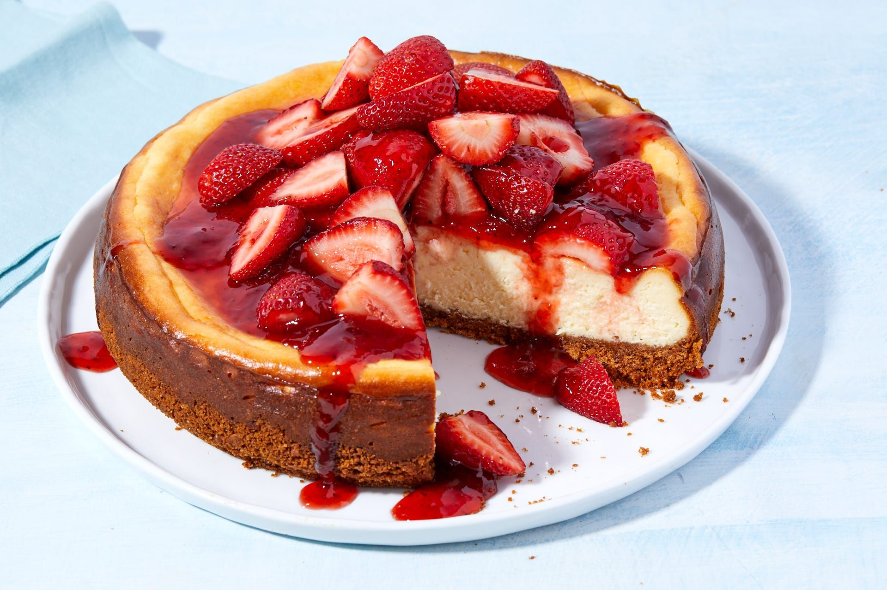

Strawberry Cheesecake

Description
A strawberry cheesecake is a simple delicacy yet is one of the most popular deserts for its simplicity yet exquisite taste. Many restraunts as well as grocery stores allow for these products to be purchased as a whole or just something sweet to have after a nice dinner.
Shown on this page is steps and ingrediants needed to create your own version of this fine delicacy
Ingrediants
Crust
- 3/4 cups of ground pecan
- 3/4 cups graham cracker crumbs
- 3 tablespoons of butter
Toppings
- 2 cups of sour cream
- 1/4 cup sugar
- 1 teaspoon vanilla extract
Filling
- 4 packets ofcream cheese
- 1-1/4 cups of sugar
- 1 tablespoon lemon juice
- 2 teaspoons of vanilla extract
- 4 large eggs
Strawberry Glaze
- 2 tablespoons cornstarch
- 1/4 cups of water
- 1 jar of strawberry jelly
- 1 quart strawberries, halved
Steps
- Preheat oven to 350 degrees
- Combine pecans, crumbs and butter
- Press onto the bottom of a 10-in. springform pan
- In a large bowl, beat cream cheese and sugar until smooth
- Beat in lemon juice and vanilla
- Add eggs and beat on low speed just until blended
- Spoon over crust
- Bake until filling is almost set, 45-50 minutes
- Cool on a wire rack 15 minutes
- For topping, combine sour cream, sugar and vanilla
- Spread over cheesecake and return to oven for 5 minutes
- Cool on a wire rack 1 hour. Refrigerate overnight, covering when completely cooled
- Several hours before serving, prepare glaze. In a saucepan, combine cornstarch and water until smooth
- Add jelly and cook over medium-high heat, stirring constantly, until jelly is melted and mixture has thickened.
- Remove from the heat; stir in liqueur and, if desired, food coloring. Cool to room temperature
- Just before serving, loosen and remove sides of springform pan. Arrange halved strawberries on top. Spoon glaze over berries, allowing some to drip down sides of cake. Serve immediately